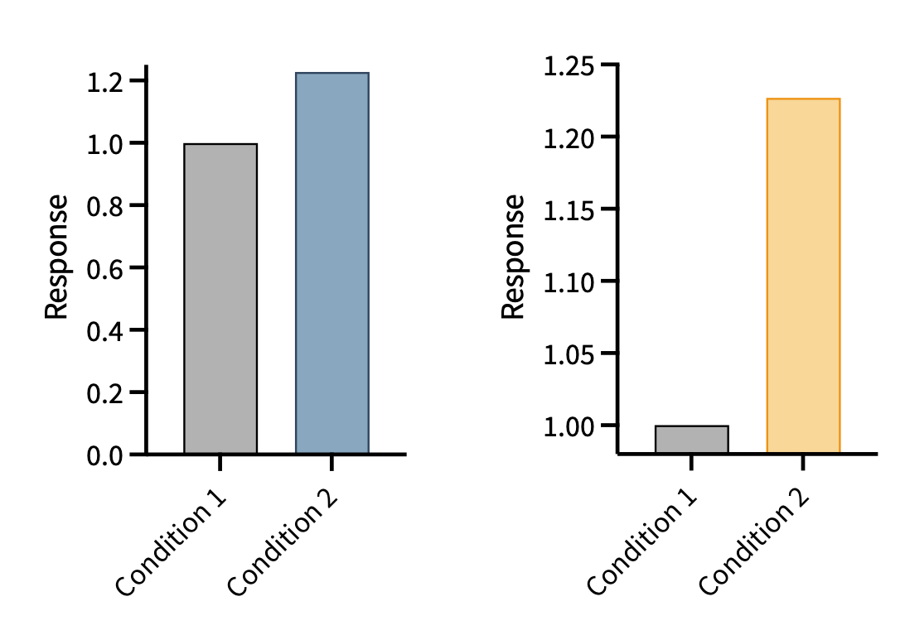
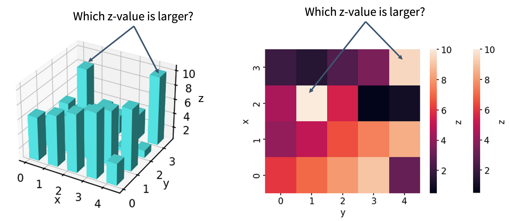
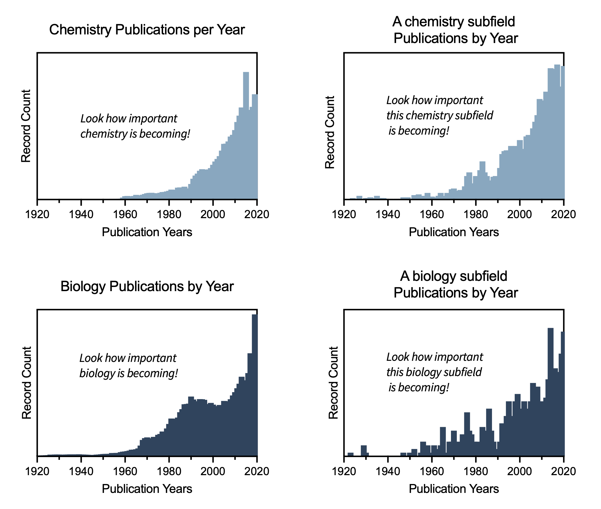
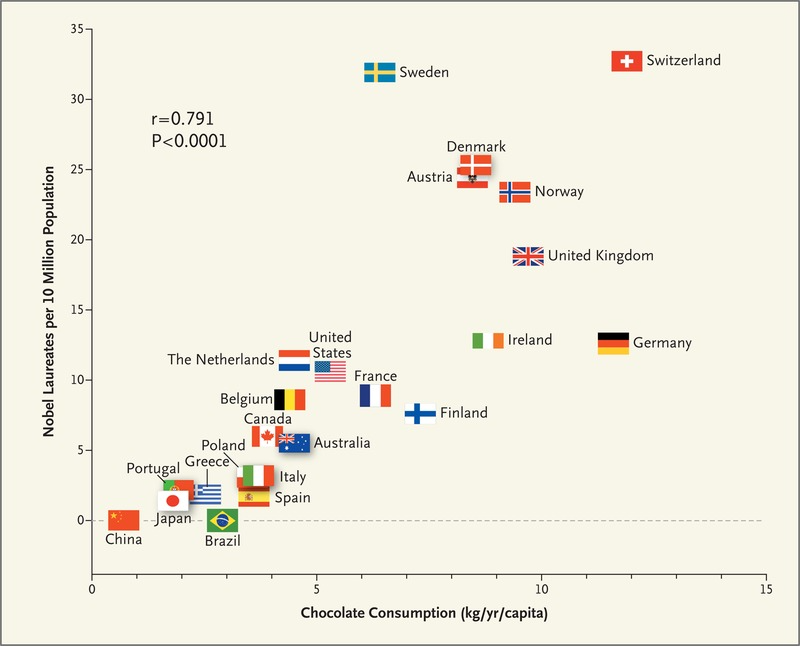
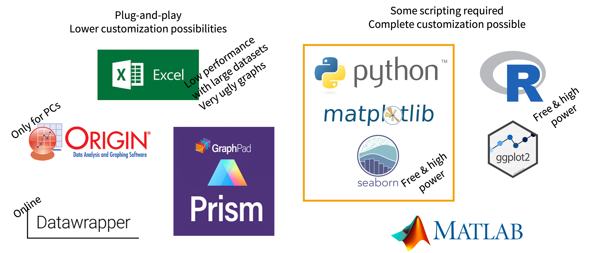
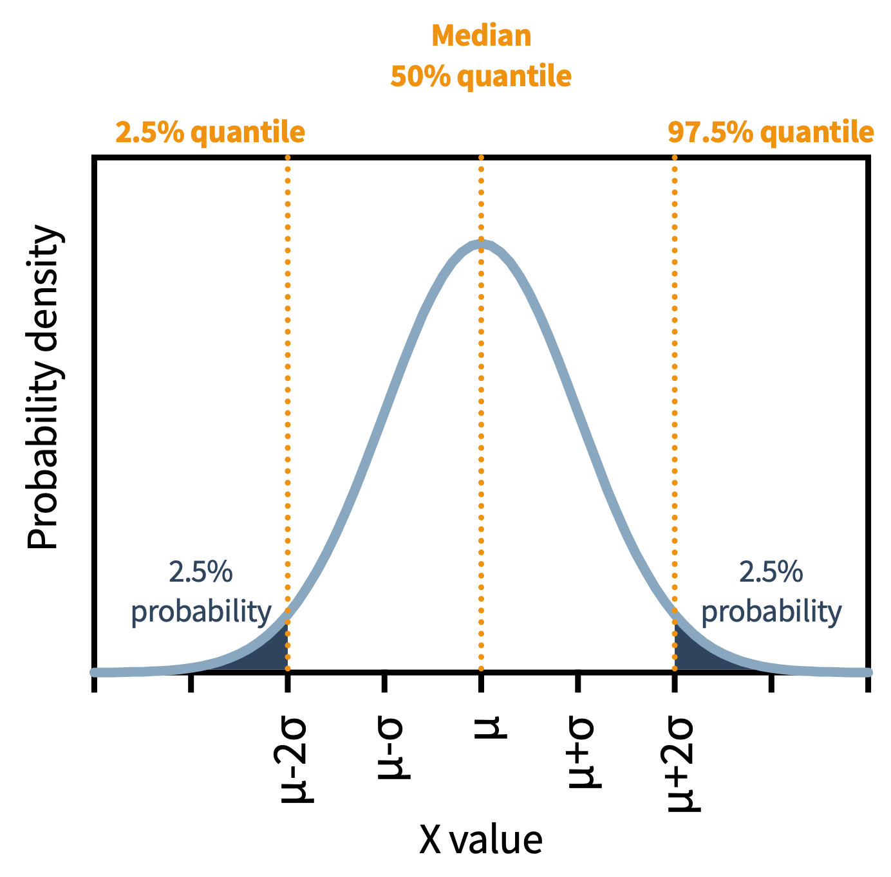

6. Data Visualization
This session is about data visualization for both continuous and categorical data. Data visualization is one of the most fun, artistic, and subjective aspects of statistics. It provides some of the most instant gratification in coding! The following topics are covered in this session.
- What makes a figure trustworthy and clear?
- What are the most common types of plots and how can we create and interpret them?
- How can we use Python to make figures with
matplotlibandseaborn?
Why Does Data Visualization Matter?
People are visual: most readers assess data by visual inspection before engaging with the underlying statistics. A well-designed figure communicates the substance of an experiment efficiently and honestly. A poorly designed one — intentionally or not — can mislead.
Data visualization is the last step in the analysis pipeline, not the first. Substance, correct experimental design, and rigorous statistical analysis must precede design. A visually striking figure built on weak analysis is still weak analysis.
What Makes Good Data Visualization?
The standard reference is Edward Tufte’s The Visual Display of Quantitative Information. The key principles:
- Clarity — the viewer should understand the message without ambiguity
- Accuracy — the visual representation must faithfully reflect the data
- Integrity — the figure should not suggest conclusions the data do not support
- Efficiency — “gives the viewer the greatest number of ideas in the shortest time with the least ink” (Tufte)
Design is the icing on the cake. Without sound substance and analysis, design is meaningless.
Misleading Data Visualization
“But you push too hard, even numbers got limits” - Mos Def, Mathematics 🎵
Several common violations distort the honest representation of data:
Law of proportional ink: the area of graphical elements must be proportional to the quantity they represent. Violations include truncated y-axes on bar plots and unnecessary 3D effects.
As an example: in which of the datasets below is the difference between condition 1 and condition 2 larger?

When we violate the law of proportional ink, a quick inspection of the figure gives a deeply incorrect impression.
Unnecessary 3D: three-dimensional representations of two-dimensional data distort areas and angles, making it impossible to read values accurately.

Suggesting causation from correlation: plotting two unrelated trends on the same axis implies a relationship that does not exist.
A VERY common example of a misleading correlation is showing the rates of publication in a field over time, and commenting on how much more important or common the field is becoming.

Wow. It looks like chemistry, biology, and these two subfields of each are really becoming more important! What are these subfields? The chemistry subfield is the study of Alchemy, an ancient practice of trying to turn metal into gold. The biology subfield is phrenology, the discredited 19th century pseudoscience that promoted the prediction of a person’s physchological traits and mental abilities to the topology of their skull.
WHAT? These are not growing fields. What is going on here?
The total number of publications in almost any field has risen continuously for decades, simply because more research is being conducted. The trend you are seeing may be entirely explained by the overall growth of publications, not by any increased importance of the topic.
Spurious correlations are entertainingly cataloged at a website dedicated to spurious correlations. The statistical lesson is serious: two variables can exhibit high numerical correlation for no causal reason whatsoever.

Choosing Software

Plug-and-play tools (e.g. GraphPad Prism, Excel) are suitable when
- data volumes are low to medium,
- little transformation is required, and
- common plot types are sufficient.
They are faster to learn but offer limited customization.
Scripting tools (Python with matplotlib/seaborn, R) are required when
- data need significant transformation,
- the plot type needs customization,
- data volumes are large, or
- the analysis must be repeated many times.
The initial learning curve is higher for scripting tools, but the long-term payoff in flexibility and reproducibility is substantial.
In this course, we plot with matplotlib (the foundational library) and seaborn (a higher-level wrapper with sensible defaults). Before choosing a plot type, ask: what type of data do I have (discrete, categorical, continuous)? what message am I conveying, and is it a fair representation? is the information density appropriate? what conventions apply in my field?
Plotting in Python: Getting Started
Run this cell first, then set consistent plot aesthetics with a parameter dictionary (a nice use of a dictionary loop):
The zip() function pairs corresponding elements from several lists — a convenient way to build a DataFrame:
Two matplotlib interfaces
The state-based interface is simplest for a single plot:
The object-oriented interface (fig, ax = ...) is required for multi-panel figures and fine control:
Continuous x, Continuous y: Line and Scatter
A histogram shows the distribution of a single variable — one of the first plots to make on new data:
Subplots
plt.subplots() with nrows/ncols creates multi-panel figures; access each panel via axes[i]:
sharex=True makes panels share an x-axis; tight_layout() prevents overlap.
Categorical x, Continuous y: Bar, Box, Violin
For categorical x-values (different catalysts, conditions, pH levels), the choice of plot should be driven by the message:
| Plot type | Focus | Baseline requirement |
|---|---|---|
| Bar plot | Magnitude of central value (mean or median) | Must start at zero |
| Box plot | Interquartile range (the spread) | None |
| Violin plot | Full distribution shape | None |
Use a bar plot when the message is “this condition produces approximately X units on average.” Use a box plot when the message is “here is the range of typical values and their spread.” Use a violin plot when the distribution shape is itself informative; for example, to show a dataset is bimodal or strongly skewed.
Tip: Many authors now overlay individual data points on top of bar, box, or violin plots, which is strongly recommended when n is small (as is common in chemistry), because it prevents the summary statistics from hiding the raw data.
Anatomy of box and violin plots: Q1 (25th percentile), Q2 (median), Q3 (75th percentile); IQR = Q3 − Q1 (spread of the middle 50%); whiskers by one of two conventions — absolute min/max, or Q1 − 1.5·IQR and Q3 + 1.5·IQR with outliers as individual points.

Comparing the three side by side with seaborn directed to specific panels (ax=axes[i]):
Your First Plotting Function
A function wraps code you reuse. For a plot you make repeatedly, define it once and call it with different data (functions themselves are covered fully in Session 7):
Why write a plotting function? If you make the same plot 20 times, a function means changing one line instead of 20 if the style needs updating, and every plot in the project looks identical, which matters for clear scientific communication.
Saving figures
bbox_inches="tight" prevents labels from being cropped. Prefer PDF or SVG (vector, publication quality); PNG for raster images.
Aesthetic Notes
- Values first: substance, thorough analysis, and design with integrity are prerequisites. Aesthetics come last.
- Clarity before visual flair. A simple, readable plot beats an impressive but hard-to-read one.
- Color vision: ~8% of males and ~0.5% of females have color vision variations. Avoid relying on red/green contrasts; tools like Color Oracle simulate how a plot looks to color-blind viewers.
- Text size: labels must be legible in the final format — what reads on screen may be too small in print or a poster.
- Aesthetics are subjective — conventions vary between journals, fields, and groups. Know your audience.
Lastly: Remember that figures are often used as superficial evaluations of any published work. If you are proud of your data, you should take care when making your figures!
Further Reading
- Tufte, E.R. The Visual Display of Quantitative Information — the foundational reference
- 10.1038/520589f — on problems with bar plots
- 10.1371/journal.pbio.1002128 — on showing individual data points
- McGuran: Data-Ink Ratio and Task Complexity in Graph Comprehension — a data-driven defense of bar plots
- Visualization is the last step — substance and analysis come first.
- Honest figures: proportional ink, no gratuitous 3D, don’t imply causation from correlation.
- Bar (mean; start at 0) / box (IQR) / violin (distribution) — overlay individual points at small n.
- Design for color-vision deficiency and legibility in the final format.
- In Python:
matplotlib(plt) +seaborn(sns); use object-orientedfig, ax = plt.subplots()for multi-panel; save vector PDF/SVG.
In person session
TBD